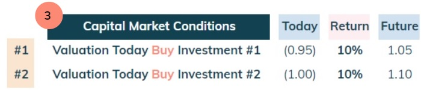

Summary
The value of a startup, on a fundamental level, is driven by the combination of two key levers:
i) how big are its future cashflows and ii) how risky are they.
Regarding first lever, when a company is very young, it is almost impossible
to assess what these will be, hence is it a common practice to use a proxy for
valuation based on operational metrics or simply the founders & team as per below.
As the company grows, the metrics used for valuation become increasingly financial
and based on forward looking multiples (e.g x times revenues of the following year).
See this LinkedIn post from Ilya Strebulaev relating to the probability of finding a unicorn and funding rounds.
For the second lever, I find it helpful to think about risk associated to cashflows as an intrinsic factor to the startup and the returns required for investors to accept that risk as an extrinsic factor as per the figure below.
 Figure 2: Risk and return factors for a startup valuation.
Figure 2: Risk and return factors for a startup valuation.
Let's start to lay out the foundations.
Scenario #1: transaction with no risk
Imagine a scenario where you have a member of your family who has a £1 coin in
their hand and that it wants to sell this asset to you. What would you be willing to pay for it?
As there is no risk of not receiving the £1 coin (immediate transaction & low risk seller),
you could consider any price up to £1.
However there are two parties in this transaction: a buyer (you) and a seller (your family member).
For an exchange to happen, both parties need to agree to a price (or valuation for the asset).
From the seller's perspective, if he accepts anything below £1 he is making a loss.
As a consequence, this transaction would occur with an agreed value of £1.
Scenario #2: transaction with low risk
Let’s assume instead a 1 month gap between paying the seller a
certain amount and receiving the £1 coin.
Now you are worried that something could happen during the one month
period that prevents delivery of the £1 (e.g. lose the coin).
You thus think there is a certain risk in the transaction and translate this
as a certain probability that the seller does not deliver the coin.
For example, if there is a 5% probability of receiving nothing, then the
expected outcome is a £0.95 payout (5% x £0 plus 95% x £1).
This investment (or transaction) would occur with an agreed value of £0.95.
If you do end up being paid £1, the £0.95 yields a return of £0.05 or about ~
5% for the risk taken.
Notice that as soon as there is some risk involved, what an
investor is willing to pay today (invest) to receive cashflows in the future decreases.
Scenario #3: transaction with higher risk
Imagine now that you need to do a transaction with a complete stranger.
In this situation, given the lack of information about the seller, you are worried
not only about the one month time period but also their profile. You thus think
this is a riskier transaction than before and assess the probability of not
receiving anything as 10% (5% for the 1 month time gap and 5% for seller’s profile).
This transaction would occur with an agreed value of £0.90. If you do end up being
paid £1, the £0.90 yields a return of £0.1 or about ~ 11% for the risk taken.
Notice how a higher risk translated into a higher required return, which
translated into an even lower price (or valuation) paid today.
Higher return = Lower Valuation
The prior scenarios are meant to illustrate that an investor’s willingness to buy
(cash outflow) an asset today, for a certain amount of money (i.e. valuation), is
linked to the expectation of receiving higher cash inflows from that asset in the future to
compensate for the risk taken.
In short, the higher the required return is for future cashflows,
the less an investor is willing to pay today for such an investment.
This is a corollary for the time value of money, i.e. £1 today is worth more than £1 in the future because it can be invested with a certain risk adjusted return.
Figure 7: Money today is worth more than money in the future.Startup Valuation = Cashflows + Risk Adjusted Returns
The value of a startup is thus the combination of two key levers: i) how big are the future cashflows (how many £1 coins in the future) and ii) how risky are they (what is the required return).
Figure 8: Startup Valuation = Cashflows + Risk Adjusted Returns.Let’s analyse each dimension separately.
Dimension #1 - How big are the future cashflows?
As explained in prior notes, Cashflows = Revenues + Costs, so let's start with revenues. The first step is to figure out how big can revenues become - £10m - £1bn?
Figure 9: Cashflows = Revenues + Costs.Revenues = Number of Clients x Spend per Client
The quantum of the revenues is driven by a) how big is the potential client base of a product and b) how much each client is willing to spend on the company’s product. How big is the market for the product or service the Company is selling?
Figure 10: Quantum of Revenues.Number of Clients
The number of clients is driven firstly by the type of clients that the
product will be sold to. A business to consumer product (“B2C”) is typically
much higher volume than a business to business (“B2C”) product, as there are many
more people than companies.
The second driver for the number of clients is if the product has a hardware/physical
component or not. A lending business or a Software as a Service (“Saas”) business are
both much higher volumes than selling houses in the London real estate market.
Spend per Client
A B2C business is typically a lower revenue per client vs a B2B business, as the product is usually simpler and people have a much lower purchasing power than a company.
Figure 11: Quantum of revenues for three different business profiles.With some basic calculations, it is simple to conclude that the third business is the most likely to become an unicorn.
Cashflows = Revenues x Contribution Margin % + Other Costs
Let's now move onto the second component of cashflows: costs. I look at costs split between Contribution Margin Costs and Other Costs because it simplifies the thinking.
Figure 12: Unit economics drive Contribution Margin and therefore cashflows.
The second step is then to analyse the business’s contribution margin costs
and determine what is the run-rate % margin (ie, look at Unit Economics).
The higher this is, the more valuable the business will be.
Coming back to the previous example, let's assume someone analysed the
businesses and concluded that each has respectively a CM % of 20%, 50% and 90%
and that in general Other Costs are c. 10% of revenues.
It then becomes even more clear, the relative value of business #3 in comparison to the other ones: ~800x vs business #1 and ~20x vs business #2.
Dimension #2 - How risky are the cashflows?
I find it helpful to think about risk associated to cashflows as an intrinsic factor to the startup and the returns required for investors to accept that risk as an extrinsic factor as per the figure below.
Figure 14: Risk and return factors for a startup valuation.#1 Quality of the cashflows
The quality of the cashflows is firstly determined by the quality of revenues and there are several factors that can used to assess this:
- Contractual: are revenues locked in through a long term contract? E.g. Sign a 5 year contract with an annual spend of £1k
- Recurring or transactional: once a new client is won, does he keep buying the product for a certain (unknown) time period or it is a one off? E.g. Client pays each month $20 and typically keeps doing this for up to 5 years vs estate agent selling a property
- Riskless: is there a potential unknown liability or loss associated with the revenues? E.g. Insurance premium - for some clients there will be claims associated or losses on a loan
- Seasonality: is demand strong only for a portion of the year? E.g. Car rentals in the summer
If we apply this framework to the previous example, it is clear that the business #1 has the worst profile.
Figure 15: Quality of revenues.The other factor for the quality of the cashflows relates to CM costs:
- CM %: how high is the run-rate CM %? The higher the better
- Variable: is there a high proportion of variable CM costs? This protects cashflows if revenues decrease
- Volatile: how volatile are the unit prices for the fixed CM costs? If high and completely independent from revenues, some sort of protection (hedging) is required
- Spending gap: what is the time gap between incurring CM costs to generate revenues (cash out) and receiving the revenues (cash inflow)? If high it makes it hard to assess profitability and may have a negative working capital effect
- Cost pass-through: when CM costs increase is it possible to pass on to customers the incremental cost in order to protect CM?
If we apply this framework to the previous example, it is very clear that the business #3 has the highest quality cashflows.
Figure 16: #1 - Quality of cashflows.#2 Development Stage
This is all about how young or not the start up is as per the figure below.
An angel / series A is a much higher risk investment than a mature company,
not only because of the uncertainty related to the product and market fit, but
also because of how many things can go wrong that may prevent it from growing.
In other words it is very unlikely that it will become an unicorn.
Investors will thus
require much higher returns to compensate for higher expected losses, which
coupled with negative cashflows implies a much lower valuation.
See this LinkedIn post from Ilya Strebulaev relating to the probability of finding a unicorn and funding rounds.
#3 Capital Market Conditions
Why do valuations change over time?
Let’s start by considering two investments as per the figure below. Both have the same risk but the return is different: 5% and 10% respectively for investment #1 and #2.
Figure 18: Two investments with different returns for the same risk.Any investor would prefer investment #2, given that it has better risk adjusted returns. Furthermore, there is also what is called an arbitrage opportunity - someone could sell investment #1 (short selling) and use the proceeds to buy investment #2 in order to generate an infinite return.
Figure 19: Arbitrage opportunity.Therefore for investment #1 to attract capital from investors, it would have to yield the same 10% return as investment #2. In other words, its price (or valuation) would have to decrease in order to eliminate the arbitrage opportunity.
Figure 20: Price change to eliminate arbitrage opportunity.This is part of the reason why valuations change over time. As capital markets investors require a higher (lower) return for a certain investment risk relating to future cashflows, valuations (i.e. prices today) will decrease (increase).
 Figure 21: Valuation (price today) changes as a consequence of changes in returns. #4 Economic Conditions
Why do these drive changes in capital market conditions?
This is the other part of the reason why valuations change over time - economic conditions
change interest rates and therefore capital market conditions. I will try to keep
this section short and simple as it is a fairly complex topic.
For an economy to function it needs fiat money, which is a government-issued currency
that is not backed by a physical asset.
Central banks from that government control how much money there is in an economy
and its cost, in line with a certain target inflation (typically ~2%).
If inflation is too high (like in 2022 and 2023), they will start to increase the cost
of money (i.e. interest rates) and decrease the amount of money in order to decrease inflation.
If inflation is too low or there is a big recession, they will do the opposite in order to
help to deleverage the economy and increase economic activity. For example, during the
2008 crisis, interest rates decreased to zero / negative and there was a massive increase
in the amount of money (i.e. quantitative easing).
Therefore, economic conditions impact central bank policies which then impact interest rates.
These changes in interest rates will make capital markets investors adjust their
returns expectations and thus impact capital markets conditions (valuations).
 Figure 22: Impact of economic conditions on interest rates and valuations.
Figure 22: Impact of economic conditions on interest rates and valuations.
There is also a potential double whammy impact of the economic conditions also decreasing cashflows as customers earnings are negatively impacted.
If you require support or have any questions my contact is: